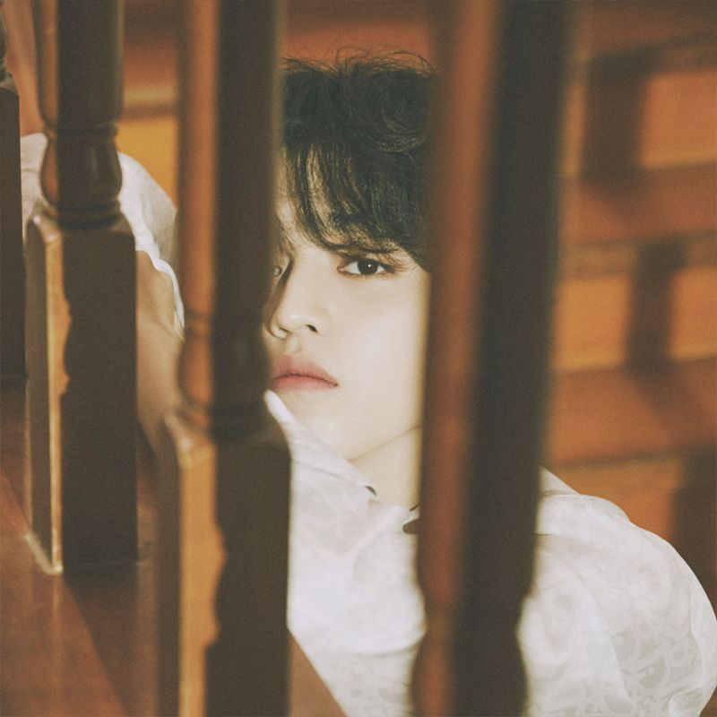

S.COUPS

세븐틴과 캐럿들의 총괄리더 에스쿱스입니다.
데뷔 전부터 연습생 내 최연장자로 리더 역할을 도맡아 했던 멤버로, 세븐틴이 연습생이던 때의 생활이 꾸밈없이 담겨있는 세븐틴TV에서 그의 리더십을 엿볼 수 있다. 여기저기 흐트러진 채 떠들던 연습생들이 에스쿱스의 말 한마디에 금방 자리 잡는 모습은 물론이고, 월말 평가회가 가까워져 오면 동생들이 트레이너에게 혼날 것을 걱정해 어쩔 수 없이 독한 말을 하며 악역을 자처하기도 했다. 그러나 멤버들과 놀 때엔 특유의 장난끼 많은 행동으로 채찍과 당근을 탁월하게 사용했으며, 이 리더십을 인정받아 세븐틴의 총괄리더이자 힙합팀 리더로 데뷔하게 된다.